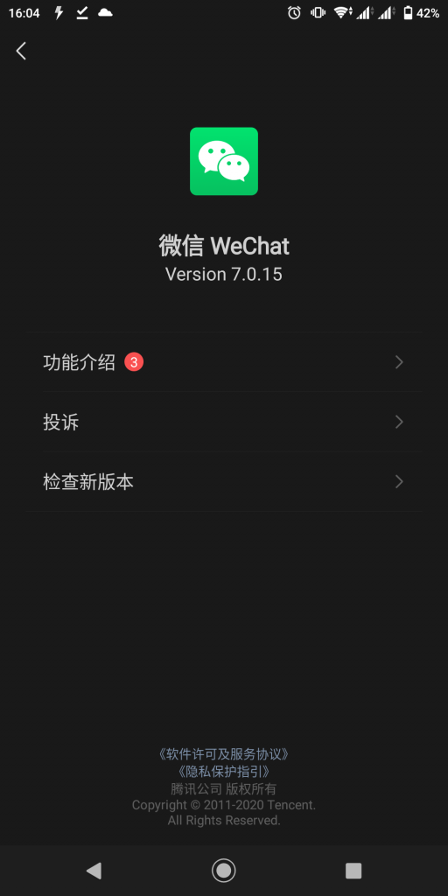
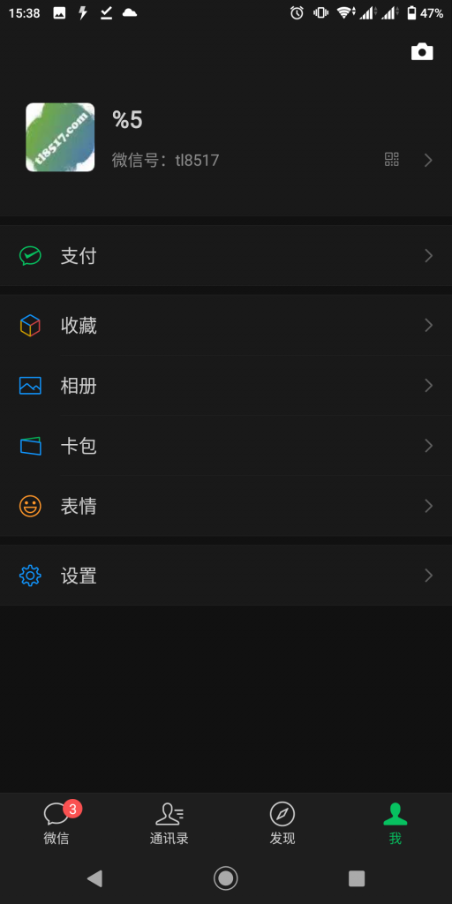
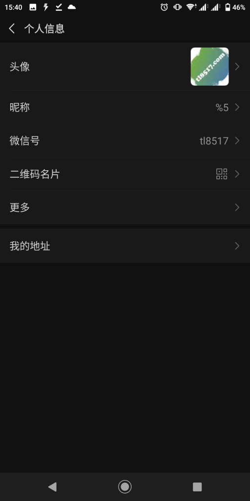
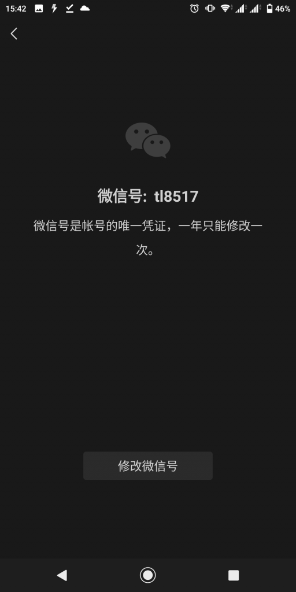
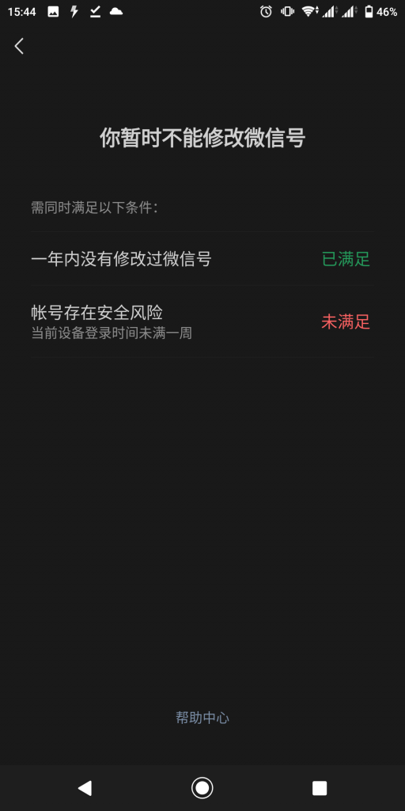

微信可以修改微信号了 发表于 2020-06-05 更新于 2021-04-11 分类于 misc 昨天不能更新微信名，今天好了，同时微信号也可以更改了。首先更新到最新版本： 我用的版本为7.0.15 更改方法： 登录微信，点击‘我’。 点击微信号来到个人信息页。看到没有？微信号选项多了一个箭头，点击它。 一年修改一次哦。应该说修改一次，要等一年啊！ 点击’修改微信号’。还需要满足两个条件。我不满足，怎么这么巧，昨天手机刚刚恢复出厂设置。后面是什么操作，我就不晓得了。我的微信号注册时就设定好的，和我的网站域名一样（https://www.tl8517.com/）。